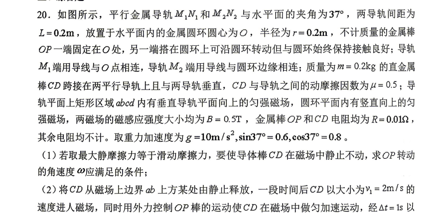
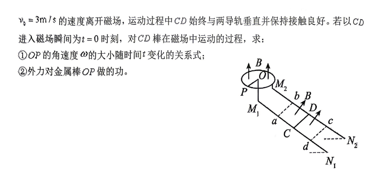
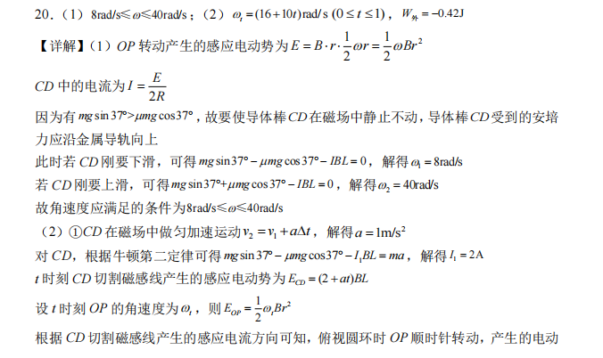
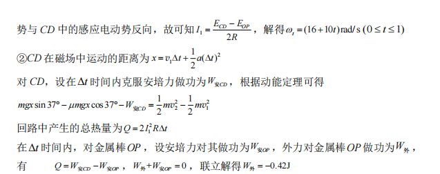

第20题：旋转导体与电磁感应
沿着运动、电流与受力的因果链，完成一次可操作的物理推理。
观察：先认清装置
拖动场景，找到旋转棒 OP 和导体棒 CD
磁场 B
速度 v
电流 I
安培力 FA
ω=20.0 rad/s
EOP=0.200 V
ECD=0.000 V
I=10.0 A
FA=1.00 N
处于静力平衡范围
受力先确定恒定电流
FA = 0.20 N → I = 2.0 A
沿斜面向下
mg sinθ = 1.20 N
mg sinθ = 1.20 N
沿斜面向上
f = 0.80 N，FA = 0.20 N
f = 0.80 N，FA = 0.20 N
1.20 − 0.80 − FA = ma = 0.20
FA = 0.20 N → I = FA/(BL) = 2.0 A
CD 速度 v2.00 m/s
电流 I（保持不变）2.00 A
OP 角速度 ω16.0 rad/s
CD 在磁场中移动 x = 2×1 + ½×1×1² = 2.5 m
安培力从 CD 转移出的机械能：0.20×2.5 = 0.50 J
安培力从 CD 转移出的机械能：0.20×2.5 = 0.50 J
0.50 J = 0.08 J + 0.42 J，所以外力控制端吸收 0.42 J：W外 = −0.42 J。负号表示外力做负功，并非向系统供能。
查看题目原图


完成推理后查看答案与详解

